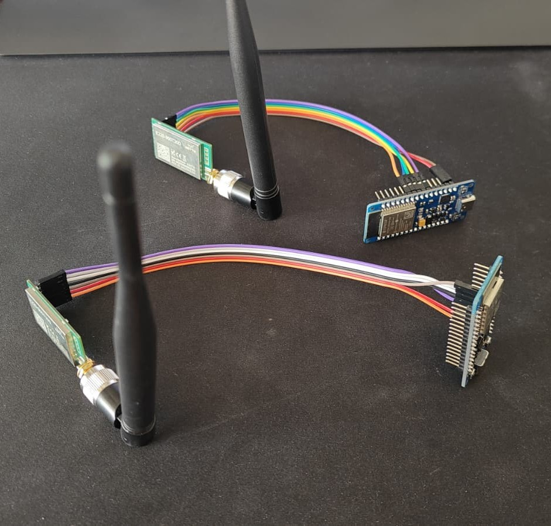

Repeteur WIFI
← RetourDescription :
Réalisation d’un système de communication LoRa 868MHz en utilisant 2 ESP32 et 2 modules Ebyte E220-900T30D.
Etapes :
- Codage des connexions WIFI de l’ESP32. Il fonctionne à la fois en AP (access point) et en STA (station). Le mode AP permet de créer un réseau WIFI dont l’ESP32 est routeur; le mode STA permet à l’ESP32 de se connecter à la box WIFI de l’opérateur internet; cela permetra d'accéder a l'IHM web en se connectant sur le wifi de l'ESP32 ou au réseau de la box WIFI (en utilisant un NAT sur l'ESP32).
- Codage de l'interface web qui permet de jouer sur les puissances d'émission et afficher des informations comme les messages recus et les états de connexions comme le RSSI. La mise à jour de la configuration du module LoRa du routeur met a jour de facon OTA les modules clients.
Environnement technique :
ArduinoIDE, ESP32, LoRa, C++, WIFI, IHM
